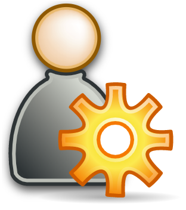
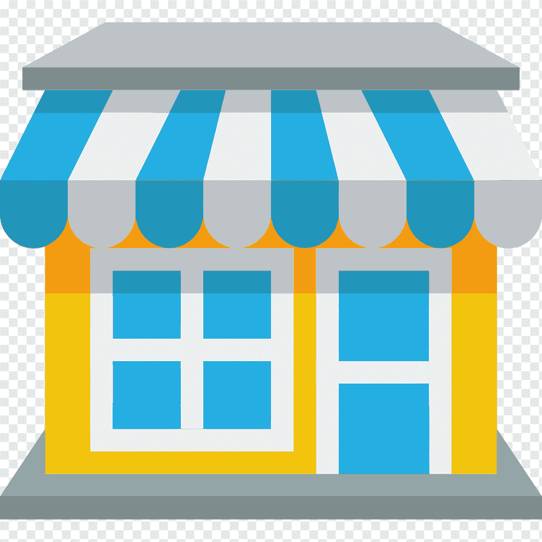

<ion-header [translucent]="true">
  <ion-toolbar color="primary">
    <ion-title>
      Configuración - {{tareas.varConfig.ruta}}
    </ion-title>
  </ion-toolbar>
</ion-header>

<ion-content class="ion-padding">
  <ion-grid fixed>

    <ion-row style="height:120px">
      <ion-col size="6">
        <ion-card button="true" (click)="abrirLogin()">
          
          <ion-card-header color="light">
            <ion-card-title>Admin</ion-card-title>
          </ion-card-header>
        </ion-card>
      </ion-col>
      <ion-col size="6">
        <ion-card button="true" (click)="sincronizar()">
          
          <ion-card-header  color="light">
            <ion-card-title>Sincroniza</ion-card-title>
          </ion-card-header>
        </ion-card>
      </ion-col>
      <ion-col size="6">
        <ion-card button="true" (click)="agregarPdv()">
          
          <ion-card-header  color="light">
            <ion-card-title>Agregar</ion-card-title>
          </ion-card-header>
        </ion-card>
      </ion-col>
    </ion-row>

    <p></p>
  </ion-grid>
</ion-content>
